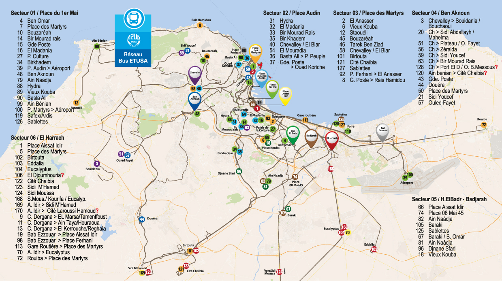

Le réseau bus ETUSA
L’Etablissement Public de Transports Urbain et Suburbain d’Alger « ETUSA », est l’opérateur historique héritier des différents opérateurs qui se sont succédés au niveau de l’agglomération algéroise (gestion des tramways d’Alger, des bus et autobus). L’établissement a subi plusieurs changements de statut.
Créée en 1959 sous le nom de Régie Syndicale des Transports Algérois (RSTA), cette dernière gérait les réseaux de bus, trolleybus et tramway d'Alger. Après l'indépendance et l'abandon des lignes de tramway et de trolleybus, la RSTA a continué à être le seul opérateur de transport public jusqu'à l'ouverture de l’activité de transport routier de personnes au secteur privé.
A l’indépendance, la RSTA était sous tutelle de la wilaya d’Alger puis :
Confiée au Ministère des Transports en 1995 avec un statut d’EPIC En 1998, le statut de l’ETUSA évolua vers le statut d’EPE et placé sous tutelle des Holdings Public Services. En 2003, aux termes du décret exécutif n°03-435 du 13/11/2003, la RSTA passe d’EPE à EPIC.
Ce statut d’EPIC a été réaffirmé en 2010 avec la promulgation du décret exécutif n°10-91 du 14 mars 2010 fixant le statut-type de l’établissement public de transport urbain et suburbain. Un linéaire de réseau actuel conséquent de 1680 KM est de 79 lignes, elle transporterait 80.000 voyageurs par jour.
Fiche technique
- Nom de l’Entreprise Etablissement Public de Transports Urbain et Suburbain d’Alger « ETUSA »
- Date de Création Créée en 1959 sous le nom de Régie Syndicale des Transports Algérois (RSTA).
- Statut juridique EPIC ; Etablissement Public à Caractère Industriel et Commercial
- Slogan ETUSA par tout ,ETUSA pour tous.
- Secteur d’activité Transport Urbain et Suburbain au sein du périmètre d’Alger
- Adresse 21 Rue Ahmed Ghermoul , Alger
- Télefax Tél : 021 66 44 68 / 05 55 02 65 94 - Fax : 021 66 01 85
- Internet Email : contact@etusa.dz - Web : www.etusa.dz
- Nombre de salariés 2301
Carte du réseau ETUSA
Champ d'action
l’ETUSA vous offre la possibilité de se déplacer aisément dans tout le milieu urbain et suburbain de la wilaya d’Alger à travers 06 secteurs, 79 lignes de bus desservant un réseau qui s’étend sur une longueur totale de 1680 kilomètres et qui sont mis à la disposition des usagers.Il s’étend à l’Est sur 25 km jusqu'à la Daïra de Rouiba, 25 km à l’Ouest jusqu’à Zeralda et 20 km au Sud jusqu’à Birtouta.
Activité
- TRANSPORT AUTOBUS
- L’Aéro-Ville (trois (03) véhicules d’une capacité de 30 et 100 places.
- Transport Entreprise
- Talaba Transport
- Transport par Cable
- Escalier Mécanique
- Dessertes Spéciales ( Occasion , Evénement )
- Publicité
Missions de l’Etablissement Public de Transports Urbain et Suburbain d’Alger
L’ETUSA est chargé d’exploiter son réseau dans les meilleures conditions de :
- Sécurité
- Accessibilité
- Régularité
- Confort
L’ETUSA a pour objet principal d’assurer le transport public des voyageurs sur l’étendu de la Wilaya d’Alger en conformité avec l’organisation générale des Transports fixées par les Pouvoirs Publics. Il assure également dans un cadre contractuel le transport du personnel pour le compte de tiers et le transport des étudiants.
L’ETUSA est aussi appelé à remplir d’autres missions qui se résument à :
- Conserver et valoriser son patrimoine.
- Veiller à l’exploitation optimale du réseau et offrir un service de qualité à ses clients.
- Assurer le service public de solidarité ( transport des personnes à mobilité réduite et transport scolaire).
- Atteindre un réseau cohérant en offrant aux Algérois une solution de pérennité efficaces pour leurs déplacement avec un élargissement des plages horaires (services nuit).
- Assurer un service optimal de confort et de sécurité.
Infrastructure
Dépôts de remisage et d’entretiens (préventif et curatif) :
- HASSIBA BEN BOUALI : 1er MAI
- SAAD : TRIPOLI HUSSEIN DEY
- BIR MOURAD RAIS: TRANSPORT ENTREPRISE
- EL HARRACH (KOURIFA)
- AIT SAADA (HUSSEIN DEY)
- OUED SMAR
- GHERMOUL : MAINTENANCE APPROFONDIE
- STAOUELI : IMPRIMERIE
- BIR MOURAD RAIS : MAGASIN CENTRAL
- ALFERD DE MUSSET (BELCOURT) :
- DEC/DFC
- PCC
- CENTRE MÉDICO-SOCIAL
LOCAUX COMMERCIAUX :
- EL BIAR (rénovation)
- ESCALIER MÉCANIQUE DU BOULEVARD MOHAMED V
- MUSSET BELCOURT